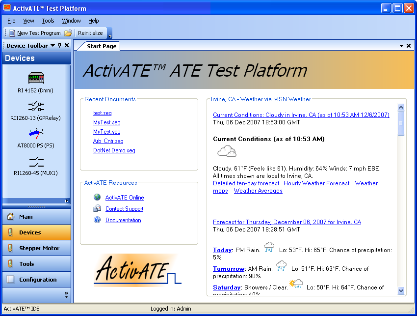
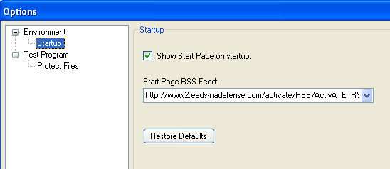
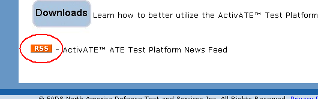
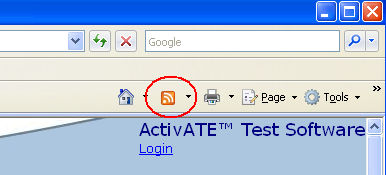
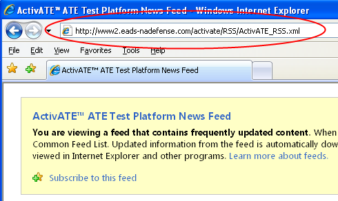

The start page is shown by default when the ActivATE™ application is launched. It has links to recently accessed documents and to resources such as documentation and email support. It also features a customizable RSS reader. See also Customizing the Start Page

RSS stands for Really Simple Syndication and is an XML-based format for
publishing syndicated content, such as news feeds. Any RSS feed can be
used in the ActivATE™ start page RSS reader. The screen shot above shows
the start page displaying a local weather RSS feed. By default, the ActivATE™ RSS
feed is used. To change the RSS feed, open the Options dialog by clicking
the Options menu item on the Tools menu.

The "Start Page RSS Feed" field saves a list of previously used RSS feeds. You may select a feed from the list, or you may simply enter the address of any RSS feed. Most websites that publish an RSS feed will display an RSS button that takes you directly to their RSS feed. Some web browsers, such as Microsoft Internet Explorer® 7, include an RSS button that is activated when the browser detects an RSS feed link on the web page. In either case, click the RSS button, copy the address of the RSS feed and paste it into the "Start Page RSS Feed" field in the ActivATE™ options dialog.
Example:
The ActivATE™ website displays an RSS button, and the RSS icon in Internet Explorer® 7 is enabled.
 
Click either button to go to the RSS feed. Copy the RSS feed address from the address bar and paste it into ActivATE.

Astronics Test Systems
Last updated on 12/6/07 by L. Anhalt